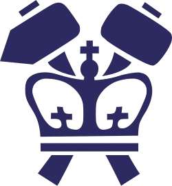

I work between two worlds: computational plasma fusion at Columbia, and the modular robotics ecosystem I'm building from scratch. Both reduce to the same question: how do you write physics that survives contact with reality?
I'm an Applied Physics undergraduate at Columbia SEAS, conducting computational plasma fusion research under Dr. Elizabeth Paul at the Columbia Fusion Energy Research Center. My work centers on stellarator optimization using simsopt, VMEC2000, and booz_xform on the NERSC Perlmutter HPC cluster.
Outside of plasma research, I co-architect ORION, a modular robotics ecosystem with four subsystems spanning perception, motor control, navigation, and self-calibrating physics discovery. The throughline is computational physics applied to systems that have to actually work, not just simulate cleanly.
The interesting problems live in the gap between clean theory and code that survives contact with hardware. That gap is where I want to spend my career.
Two threads. Stellarator plasma physics for fusion energy at Columbia, ongoing. Stellar photometry calibration with TESS data at CUNY Queens, presented at TASC7 in Hawaii and TASC NYC, concluded.
A δf Particle-in-Cell framework for the Vlasov-Poisson bump-on-tail instability. Modeling resonant transport in stellarator geometries.
Statistical analysis of 33,396 sector observations to quantify CROWDSAP errors. White dwarfs as flux standards.
A modular robotics ecosystem co-built with David Young. Four subsystems share state through ROS 2, each owning one layer of the perception-decision-action loop.
BROTEUS sees. ORION decides. CHIRON moves. DAEDALUS calibrates.
ORION is the central reasoning hub. It receives perception from BROTEUS, requests navigation plans from ATHENA, dispatches motion commands to CHIRON, and pulls calibration updates from DAEDALUS as it learns physics from real motion data.
Subsystems are independent FastAPI services on dedicated ports, communicating over ROS 2 Humble. No subsystem holds the others' state.
Three of ORION's four subsystems have working implementations. Each has a dedicated technical write-up.
Real-time vision pipeline. YOLO-World detection, MediaPipe dual-hand tracking, MiDaS depth, gesture & animation recognition. 21 FPS on CPU.
Self-measuring gripper. Geometry-based grasp planning. 9-phase pick-and-place sequencer with grasp verification & auto-retry. 500 Hz physics.
4 algorithms (A*, Dijkstra, RRT, D* Lite). Infinite procedural terrain. 4 planetary environments: Mars, Venus, Europa, Titan. Browser-native.

Awarded for sustained excellence in physics studies.
Recognition for the TESS White Dwarf calibration project.
Impactful collaboration in undergraduate research.
Tools I reach for, organized by where they live in the workflow.
Reach out about: undergraduate or summer research, robotics partnerships, fusion-related opportunities, or just to talk through an interesting problem.